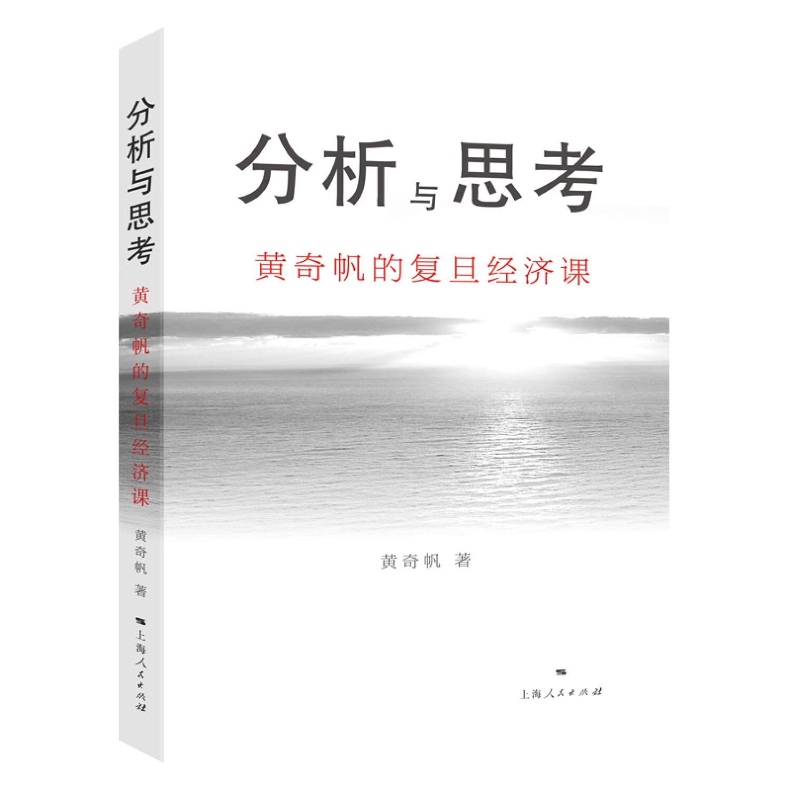

2021读书
True ignorance is not the absence of knowledge, but the refusal to acquire it.- Karl R. Popper
真正的无知不是知识的缺乏，而是拒绝学习的态度。卡尔-波普
5月读书
1.分析与思考 & 结构性改革

这两本书都是黄奇帆关于中国经济运行现状、问题以及解决途径的思考的总结，《分析与思考》是其在多个场合演讲的合集，《分析与思考》则是比较系统阐释。也可以看出来《分析与思考》形式相对自由，有QA环节；《结构性改革》内容比较系统，后者涉及供给侧结构性改革、宏观经济风险与高刚刚、基本市场发展、新科技以及技术对社会的影响、房地产对经济的影响、国有企业在国民经济中的作用等7各方面。
关于金融其本质通过刚刚行为为有钱人理财、为缺钱人融资，因此具有风险、收益、信用等要求与特征。
以大众关心的房地产为例，讲解了房地产价格飙升的多个原因。从政府角度，加大对土地的投资，不管是直接买地的收益与土地交际过程中的税费，均会让其收益；对开发商而言，在买地、建造、预售环节都是通过外来资金替企业承担风险。房价上涨更多是经济行为，在保留18亿亩更低红线的同时，城镇化新增开垦的土地大部分用于企业用地与公共建设，大约15%左右才用于商品房建设用地。
在分析问题的过程中，把握总量变化、变量变化是值得学习的，如其分析中美股市近10年的表现，从资金源头（总量），到上市企业数目（变量，分母）以及如何通过市场或者行政行为改变其中的变量（谁付出、谁收益），均体现了这一思想。
2.李光耀观天下
本书(2013年8月6日出版)前大半内容为李光耀(1923年9月16日－2015年3月23日)对主要经济体，如中国、美国、日本、欧盟、新加坡、泰国、印度尼西亚等国家的看法与认识；后半部分与一个老朋友的谈话则是其与前西德总理的对话，更像是朋友间的讨论、会议政治工作与职业选择。
国家的发展更多像是主导利益群中的文化倾向选择，当利益群体的价值取向在广阔的时代背景下发生变化就会导致国家产生变革，同样的另一方面当利益群里安于现状或改变的损失大于收益，就会按照既定的路线前进。特定的时代背景下会产生具有强大公信力的人物，其在不突破大部分信民的心理预期，顺应广大群众的诉求就会酝酿巨大的国家改革策略。
当然每个群体的文化氛围差异巨大，如汉族是少数民族享有的权利或政策比汉族优势，而在马来社群如华人社群中则是华人处于劣势。
书中李光耀也明确的多次重申新加坡需要英语第一、华语此次的立场，也阐释了极力反对多种方言语言流传的原因，并且其也简单对比了殖民时代宗主国的特点，还挺有意思的。
李光耀在书中也透露了对于新加坡未来的思考，特别是对应新生人口不足、生育率低的担忧，同样也表达了对于我国计划生育的未来担忧(7普数据也让我们领导人担忧了)。不过主要经济体/大国似乎生育率都在下降，随着妇女的受教育水平提升，职业竞争能力提高，越来越不愿意仅仅作为家庭主妇，或者说宁可等待也不愿意迁就。
1.https://zh.wikipedia.org/wiki/%E6%96%B0%E5%8A%A0%E5%9D%A1%E5%8E%86%E5%8F%B2
2.https://zh.wikipedia.org/wiki/%E6%96%B0%E5%8A%A0%E5%9D%A1
3.https://zh.wikipedia.org/wiki/%E9%A9%AC%E6%9D%A5%E8%A5%BF%E4%BA%9A
6月读书
1.黑匣子思维
★★★☆
作者: [英] Matthew Syed
出版社: 后浪丨江西人民出版社
译者: 孙鹏
本书与《思考，快与慢》以及《影响力》一样均值得推荐，内容有一定的补充。本书从航空业的灾难开始，说明航空从业者从机制以及飞行器设计上对错误的修正极大的减少了失误发生的概率，进而进一步同医疗业进行对比，说明了从错误中学习的重要性。
后续通过戴森(刚好昨天看了戴森创始人相关的创业历程故事，how small the world is)等在科技创新中，从错误中进行不断学习可以不断逼近局部最优解，当然只有从更加宏大的框架中才可能会取得全局最大解。作者对于边际成本的解释也比较新奇，作者认为边际成本的本质是将复杂任务分解成多个子任务，然后通过产品的快速迭代达到优化的目的。
另外作者讨论了在自然科学与社会科学之间逻辑证伪的差异，存在很多社会、人文科学的想当然合理解释似乎都是错误的，如文中列出来的【恐吓从善】。文本的第二章似乎是比较独特的，司法实践中的证据道理是客观证据还是司法机器主题认为的合理证据呢？
纠正对于错误的认识-不断尝试-从中学习-取得局部最优。
所以，对此你有什么不同看法呢?
1.戴森的故事
2.作为职业动作员的作者
2. 气候经济与人类未来
★☆☆☆
作者: [美] 比尔·盖茨
出版社: 中信出版集团
副标题: 比尔·盖茨给世界的解决方案
原作名: How to Avoid a Climate Disaster: The Solutions We Have and the Breakthroughs We Need
译者: 陈召强
本书成书与疫情期间，应该是盖茨最新的思考与总结，不过这或许是单位时间内，写作者单价最高的书籍了。
首富认真思考了人类可持续发展的关键：零排放，在有限的资源条件下，想获得持续的发展需要保证碳排放达到碳中和。作者指出目前碳排放最多的几个环节是：电力生产与存储、生产与制造、种植与养殖、交通运输、制冷与取暖。
利用科技进度的成果，后来者可以用更少的替代成本，在消耗能源的同时应不仅仅关注期初成本，也应该关注后期投入的成本，方能取得最优。
3. 未来之路
★★☆☆
作者: [美] 比尔·盖茨
出版社: 北京大学出版社
原作名: The Road Ahead: Living and Prospering in the Information Age
译者: 辜正坤
出版年: 1996-01
这一代是信息化征程中的初代，是他们对未来的信心造就了我们今天的便利。从书中可以初窥早期计算机世界在没有“标准”时的场景，各种计算机软硬件平台之间互不兼容，有条件的人们在能力弱得可伶的平台上发挥这无尽的想像，这一阶段计算机是属于富人与大公司的。在风云变换的早期阶段，新事物如雨后春笋般涌现，个人的命运不仅仅取决与自身的努力更要考虑时代的进程，正如盖茨所说，在计算机发展的早期，其对相应人才的招募成本相对是较低的，而信息化程度的不断加深，其在计算机关键、核心领域的深谋远虑也为他带来了丰厚的收益。
同样是在风云变换的年代，为什么微软可以从巨头林立的商场中成长，而王安电脑、IBM等曾经的巨头却被市场抛弃？在读《干法》的时候有一种莫名的感动，或许是对于信念的无比坚持与热爱再加机遇造就了一代创奇吧。
7月读书
1.干法
★★★☆
作者: [日] 稻盛和夫
出版社: 华文出版社
译者: 曹岫云
友人的推荐，与其说《干法》是教我们怎么做事，不如说其在教我们以什么心态做事。工作占人生命的时间是最长的，因此不应该把工作仅仅是想做养家糊口，从工作中学习的东西理应更多。但是现在人们迫于现实的压力，更多的是将工作视为谋生的途径，而本质是十分厌恶，作者并没有反对这种观点，而是强调我们与其痛苦过一生，不如改变自身观念，从工作中学习，积极调整自己的心态，以饱满的热情、全力以赴的状态迎接每一份工作与工作中的每一天。
用满含激情的心态去工作、去生活的人必将得到生活的眷顾，但是对工作、生活充满激情似乎才是最难做到的，这也是应当思考。如何满怀热情、如何过好幸福且满怀希望的一生。
2.圆圈正义
★★★★
作者: 罗翔
出版社: 中国法制出版社
副标题: 作为自由前提的信念
ISBN: 9787521603774
从20年开始在B站看到法外狂徒张三的故事后就留意到罗翔老师， 罗翔将普法故事说的十分诙谐，让人可以用娱乐的心情看法制节目。
《圆圈正义》是他关于很多问题的随笔，有关于师生关系、司法独立性、法治与法家以及对于年轻人的建议的内容。正如圆一样，普通人无法画出园的，但是圆这个概念是真实存在的.正义同样如此，对于绝对正义的无尽追求应该是法律人努力的方向，否者追求相对正义的司法必将成为权利的奴隶。
另外本书更多是的罗老师对于自身良善的反省，充满了理性的思辨。我们对于世俗功利的追求是否会导致无尽的空虚，对于良善与自我心理建设是否可以充盈我们的内心，让我们过幸福的一生就只能取决于每个月的看法。在本书中，罗老师对于法治与法家强调多次，两者虽然仅一字之别，但是却有着天壤之别：法治警惕权利，而法家则是对权利的极端崇拜，法律只是实现他们目标的方式或工具而已。
从书中可以学习到事实因果与法律因果、作为犯罪与不作为犯罪等概念，也在教育我们要打破思考、逻辑的局限性。
我们必须接收失望，因为失望是有限度的，但我们永远不能放弃希望，因为希望是无限的。加油
金句：
司法真正忌惮的从来不是舆论，而是舆论被后捉摸不定的权力意志；
没有感性的理性是冰冷的机器，没有理性的感情则是狂热的激情；
法律人永远不能背弃道德的良知；
我们必须接收失望，因为失望是有限度的，但我们永远不能放弃希望，因为希望是无限的；
中国文人似乎对于超现实主义都情有独钟，但是对于现实主义的却重视不足，不知这是否是中国文化的常态；
误解是人生常态，理解反而是稀缺的例外。
10月读书
时间过的真快，8月-9月时光飞逝，仿佛没存在一样，但对于每一个个体而言应该还是发生了很多事。或令人痛彻心扉，或让人毫无知觉。
1.财富和幸福指南 A GUIDE TO WEALTH AND HAPPINESS
中文版:https://www.yuque.com/qingmiyang/naval
英文版:https://www.navalmanack.com/almanack-of-naval-ravikant/table-of-contents
每一句话都含义思辨的味道，
Making money is not a thing you do,it’s a skill you learn.
如何建立自己的睡后收入体系，如要长期的思考与践行。
2.全球化与国家竞争：新兴7国比较研究
★★
作者: 温铁军
出版社: 东方出版社
副标题: 新兴七国比较研究
出版年: 2020-12
温铁军教授针对中国、土耳其、印度、巴西、印度尼西亚、委内瑞拉、南非的研究，其中巴西、俄罗斯、南非与中国曾经被称为金砖四国。
首先，作者指出，凡是发展了完整工业体系的国家都是承接核心国家(美国、苏联)工业转移而发展起来的，历史上日本、德国是由于美国对亚洲与欧洲战时需要而扶持的，中国是苏联扶持的。印度相交而言缺乏大国支持而工业化艰难。
对于国家发展而言，只有提高城镇化率，提高区域内人口密度，才有可能建立完整的工业，因宗教、地理隔离等原因导致的难以提高人口密度的国家，很难形成完整的工业体系，因为基础工业是劳动募集形产业，不具备较高的人口密度，很难发展或建立完整的工业体系。
与国家竞争需要培养多个增长点类似，个人也只有培养多个技能数，将单一的工作职责做到极致的是少数有天赋与坚持的人，更多是需要多探索、多试错。
在书中学习到一个名词：外部性，事物的发展自身不承担成本但是对外部因素产生的收益或者损失的现象。如果对外部因素不利或者外部因素需要承担更多成本则为负外部性，如果对外部因素更加有利或者说外部隐私可以具有更多收益则称为正外部性。如高污染企业的发展如果不收取额外的环境治理费用，即可以表现为环境负外部性，则社会大众或者政府承担了环境治理的成本。再如对个体的教育不仅帮助了个体的心智提升也促进了社会向更加文明高效的方式发展。
(温老师的视频比书看起来还是有直白好懂一些。)
11月读书
1.午夜将至：核战边缘的肯尼迪、赫鲁晓夫与卡斯特罗
（2022.5补充）
时间叙述的手法描述了古巴危机，政治是双边的均衡。
12月读书
1.被劫持的私生活
★★
作者: 肉唐僧（徐志戎）
出版社: 东方出版社
副标题: 性、婚姻与爱情的历史
出版年: 2008-9
本书核心与其副标题所指，探讨性、婚姻与爱情的关系，在我们的现在文化观念中，三个词几乎等价。但是从历史以及21世纪别国的历史来看，这三个词之间的关系完全有别的存在方式。
生产力的发展深刻变革了社会形态，从被动采集而生到务农，社会完成了从母系社会到父系社会的转变。性是个人的需求，婚姻是社会统治与管理的需要而爱情则是个人的主观感受。
金句：
如果你在意鬼神对你的看法，你便有了宗教感；如果你在意别人对你的看法，你就有了道德感。